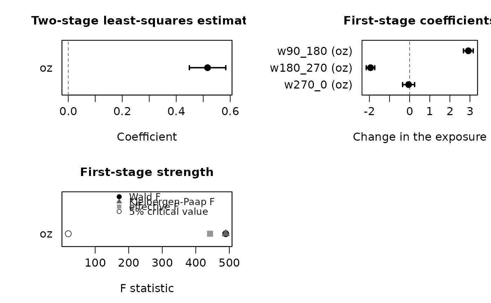

Estimates the effect of an exposure that is measured with error or
shares unmeasured causes with the outcome, by instrumental variables:
each endogenous column is first regressed on the excluded instruments
and the controls (the first stage), and the outcome on the fitted values
and the controls (the second stage), with one or two sets of fixed
effects absorbed throughout. This is the linear estimator of
Herrnstadt, Heyes, Muehlegger and Saberian (2019): the log of daily
assaults near each monitor on ozone, instrumented by a westerly wind,
with monitor and time fixed effects and errors clustered by monitor and
by date. Without endo and inst it is least squares with the fixed
effects.
Usage
ivfe(
data,
y,
endo = NULL,
inst = NULL,
x = NULL,
fe,
clus = NULL,
se = c("cluster", "twoway", "hc1", "nw", "boot", "dk"),
ssc = c("G", "nk", "none"),
time = NULL,
lag = NULL,
nboot = 199,
seed = NULL,
level = 0.95,
tol = 1e-12,
twc = c("min", "each"),
psd = c("none", "eig")
)
# S3 method for class 'ivfe'
print(x, ...)
# S3 method for class 'ivfe'
summary(object, ...)
# S3 method for class 'ivfe'
plot(x, ..., main = NULL, col = NULL, pal = NULL, terms = NULL)Arguments
- data
A data frame, one row per place and period.
- y
The name of the outcome column (numeric).
- endo
NULLor the names of the endogenous columns (the exposure).- inst
NULLor the names of the excluded instruments, at least as many asendo(fromwindiv()orinvsn(), say).- x
NULLor the names of the exogenous controls. Forprint()andplot(), an object of classivfe.- fe, clus, se, ssc, time, lag, nboot, seed, level, tol, twc, psd
As in
ppmlfe().- ...
Not used by
print()andsummary(); forplot(), passed to the base-graphics call.- object
An object of class
ivfe.- main
NULL(a default title) or one string.- col
NULL(the palette) or colours.- pal
NULL(the session palette, seeplotopt()) or a palette name forblpal().- terms
NULL(every coefficient) or the names of the terms to draw.
Value
An object of class ivfe, a list: coef (as in ppmlfe(),
without rr); first, one row per endogenous column (endo, wald,
kp, eff, keff, cv, ninst); overid, with more instruments
than endogenous columns, two rows (test "sargan" and "hansen",
stat, df, p; else NULL); gmm, the two-step GMM estimates
behind the J test (else NULL); fstab, the first-stage coefficient
of each
excluded instrument (endo, inst, est, se, and rel, est
over the mean of the endogenous column; NULL without endo);
vcov; n; ncl; se, ssc, lag; rss;
draws for the bootstrap; fe, clus and level. summary()
returns coef.
Details
What an instrument must satisfy, in plain words. Relevance: it moves the
exposure, after the fixed effects and controls. Exclusion: it changes
the outcome only through the exposure. Wind direction moves pollution,
but if it also moves where people are (a wind off a lake on a warm day)
the exclusion fails; no statistic can show that it holds. With effects
that differ between places, two-stage least squares estimates a
weighted average of them over the places and days the instrument moves,
and only if the instrument pushes the exposure the same way everywhere
(monotonicity; Bondy, Roth and Sager let wind act differently by region
for that reason: see windiv()).
First-stage strength, in first: wald, the robust Wald statistic of
the excluded instruments divided by their number (the "F-test" Bondy,
Roth and Sager report, as far as their text says); kp, the
Kleibergen-Paap rk Wald statistic divided by the number of instruments
(the "rk Wald F" of Herrnstadt and others 2019, table 7): for one
endogenous column it is the same robust Wald statistic over q; for
more, the rk statistic of Kleibergen and Paap (2006, equation 22,
p. 104) that the instruments' first-stage coefficients have rank one less
than the endogenous columns, with their normalisation Theta = G Pi F',
F F' the instruments' cross products and G'G the inverse of the
endogenous columns' (p. 103), all after the controls and the effects,
and the clustered covariance of Pi; under that null the rk statistic
(kp times ninst) is chi-squared on ninst - length(endo) + 1
degrees of freedom (their Corollary 1); dividing by ninst is the
convention of the "F" form, not the paper's. eff, the effective F of
Montiel Olea and Pflueger (2013, equation 3, p. 360), b'Qb / tr(V Q)
with b the instruments' first-stage coefficients, V their robust
covariance and Q their cross products after the controls and the
fixed effects: the paper's Y'ZZ'Y / (S tr(W2)) once the instruments
are made orthonormal (their step 1), checked to be the same; keff,
its effective degrees of freedom for their simplified test (equation 4
with x = 1 / tau, tau = 10%), and cv, the simplified test's 5%
critical value, the upper 5% point of a noncentral chi-squared on
keff degrees of freedom with noncentrality 10 keff, over keff
(section 2.2.2 and table 1; 23.1 for one instrument): the Nagar bias of
two-stage least squares is less than 10% of the benchmark when eff
exceeds cv. eff, keff and cv are for one endogenous column only.
The generalised test, which needs their function B_e, is not built. The
first-stage statistics use the clusters of
se (each row for "hc1", the first clus column for "nw" and
"boot").
Over-identification. With more instruments than endogenous columns,
overid gives the two statistics the review of Yamada (2026, section
4.3, section 7 and table 8, item 6) asks for, across instrument definitions:
the Sargan statistic n u'Z(Z'Z)^-1 Z'u / u'u at the two-stage least
squares residuals u, and the cluster-robust Hansen J, u2'Z S^-1 Z'u2, with S the sum over the clusters of (Z_g'u_g)(Z_g'u_g)' at
u (two-way: S1 + S2 - S12) and u2 the residuals of the two-step
GMM estimate (X'Z S^-1 Z'X)^-1 X'Z S^-1 Z'y (returned as gmm), all
after the fixed effects, Z the excluded instruments and the
controls. Both are chi-squared on the number of instruments less the
number of endogenous columns when all the instruments are valid (the J
statistic of Hansen as Mullahy 1997, p. 590, states it for GMM). The
clusters are those of the first stage (below). Instruments from two
families (pressure-level and surface inversions, say) put together in
inst give the review's cross-family test.
Standard errors (se, ssc, time, lag, nboot, seed) are as in
ppmlfe(), on the second-stage design with the structural residuals
(the outcome less the actual, not the fitted, endogenous columns times
their coefficients). With "cluster" and ssc = "G" they equal
fixest::feols() with ssc(K.adj = FALSE, G.adj = TRUE, G.df = "min").
Tests use the t distribution on G - 1 degrees of freedom for
clustered errors and the normal otherwise.
Other designs this estimator fits. Hener (2022, sec. 3) instruments the
daily noise of the municipalities near Frankfurt Airport by the landing
direction: with the tailwind component on the westbound approach
(tailwd()) above 2.6 m/s the airport lands from the west, so the
instrument is 1 when the tailwind exceeds 2.6 m/s for a municipality
under the eastbound approach, 1 when it is at most 2.6 m/s for one
under the westbound approach, and 0 otherwise; municipality, year,
month and weekday effects, with the errors clustered by "treatment
group-year-quarter". Sarmiento (2020, eqs 6-8) regresses the log count
of crimes within two kilometres of a monitoring station on its hourly
pollution, instrumented by the wind direction, with hour, weekday,
month, year and station effects and errors clustered by station.
Batkeyev and DeRemer (2023, sec. 4.4) instrument the log of PM2.5 by
mountain winds and inversions (windiv(), invsn()) with the errors
of Driscoll and Kraay (se = "dk", below), and report the
Kleibergen-Paap first-stage statistic (first$kp).
se = "dk" (beyond those of ppmlfe()): the errors of Driscoll and
Kraay, robust to correlation across units and over time. With h_t
the sum of the rows' scores over the rows of time t (the time
column), the middle of the sandwich is sum_t h_t h_t' plus, for each
pair of times d apart with 0 < d <= lag, (1 - d / (lag + 1)) (h_a
h_b' + h_b h_a'), the Newey-West estimator of the series of the
summed scores. Batkeyev and DeRemer (2023) do not give their lag; the
default is the bandwidth of Newey and West (1994) of "nw" computed on
that one series. The small-sample factor "G" is T / (T - 1) with
T the times; the first-stage statistics cluster by the first clus
column, as for "nw". Ayesh (2023, eqs
1-3) and Bao and Da (2026, sec. 4) instrument district- and
county-level pollution by downwind exposure (dwnexp()). Singh and
Visaria (2021, eqs 2 and 4) regress the daily complaints of each police
station of Bihar on PM2.5 instrumented by octant-by-division wind
indicators (windiv()), with weather in quartile indicators, station,
year, month, calendar-week and weekday effects and errors clustered by
station. Without endo this is least squares with absorbed effects, as
Wesselbaum (2022, eq 1) fits the hourly counts of crimes near each pair
of weather and pollution stations on the pollutants and their squares,
with station, year, month, day and hour effects and errors clustered by
hour (each crime matched to the nearest stations).
plot() draws the coefficients with their intervals and, with
endogenous columns, the first-stage coefficient of each instrument
(fstab, with normal intervals at level) and the first-stage F
statistics beside the 5% critical value of the effective F; it
returns a list of what it drew (coef, fstab, first).
References
Herrnstadt, E., Heyes, A., Muehlegger, E. and Saberian, S. (2019). Air pollution as a cause of violent crime. Working paper.
Bondy, M., Roth, S. and Sager, L. (2020). Crime is in the air: the contemporaneous relationship between air pollution and crime. Journal of the Association of Environmental and Resource Economists, 7(3), 555-585. doi:10.1086/707127
Kleibergen, F. and Paap, R. (2006). Generalized reduced rank tests using the singular value decomposition. Journal of Econometrics, 133(1), 97-126. doi:10.1016/j.jeconom.2005.02.011
Chen, S. and Li, T. (2020). The effect of air pollution on criminal activities: evidence from the NOx Budget Trading Program. Regional Science and Urban Economics, 83, 103528. doi:10.1016/j.regsciurbeco.2020.103528
Hener, T. (2022). Noise pollution and violent crime. Journal of Public Economics, 215, 104748. doi:10.1016/j.jpubeco.2022.104748
Sarmiento, L. (2020). I am innocent: hourly variations in air pollution and crime behavior. DIW Berlin Discussion Paper. doi:10.2139/ssrn.3639084
Batkeyev, B. and DeRemer, D. R. (2023). Mountains of evidence: the effects of abnormal air pollution on crime. Journal of Economic Behavior and Organization, 210, 288-319. doi:10.1016/j.jebo.2023.04.009
Ayesh, A. (2023). Burned agricultural biomass, air pollution and crime. Journal of Environmental Economics and Management, 122, 102887. doi:10.1016/j.jeem.2023.102887
Singh, T. P. and Visaria, S. (2021). Up in the air: air pollution and crime. Evidence from India. Working paper, Hong Kong University of Science and Technology.
Wesselbaum, D. (2022). Violent crimes and homicide in New York City: the role of weather and pollution. Journal of Forensic and Legal Medicine, 91, 102430. doi:10.1016/j.jflm.2022.102430
Bao, J. and Da, Y. (2026). Wildfire smoke and crime: evidence from California. Working paper, Renmin University of China.
Driscoll, J. and Kraay, A. (1998). Consistent covariance matrix estimation with spatially dependent panel data. Review of Economics and Statistics, 80(4), 549-560.
Carrillo, P. E., Lopez-Luzuriaga, A. and Malik, A. S. (2018). Pollution or crime: the effect of driving restrictions on criminal activity. Journal of Public Economics, 164, 50-69. doi:10.1016/j.jpubeco.2018.05.007
Montiel Olea, J. L. and Pflueger, C. (2013). A robust test for weak instruments. Journal of Business and Economic Statistics, 31(3), 358-369. doi:10.1080/00401706.2013.806694
Yamada, H. (2026). When the air doesn't move the data: the thermal inversion instrument in developing countries. Keio-IES Discussion Paper DP2026-018, Keio University.
Examples
# simulated: an unmeasured daily shock u raises both the exposure and
# the outcome; the wind moves the exposure only
set.seed(2)
d <- expand.grid(day = 1:60, area = 1:12)
d$wind <- runif(nrow(d), 0, 360)
w <- windiv(d$wind, width = 90)
d <- cbind(d, w)
u <- rnorm(nrow(d))
d$oz <- 3 * w[, 1] - 2 * w[, 2] + u + rnorm(nrow(d))
d$out <- 0.5 * d$oz + u + rnorm(nrow(d))
f <- ivfe(d, "out", endo = "oz", inst = colnames(w), fe = c("area", "day"),
se = "twoway")
f
#> ivfe: two-stage least squares, 720 rows, fixed effects area and day; two-way clustered errors (area, day; 12 and 60)
#> term est se stat p lo hi
#> oz 0.516 0.03059 16.87 3.29e-09 0.4487 0.5833
#> first stage: robust Wald F, Kleibergen-Paap rk Wald F, effective F, its keff and 5% critical value (tau 10%):
#> endo wald kp eff keff cv ninst
#> oz 489.3 489.3 442.5 1.818 19.73 3
#> over-identification: Sargan, and Hansen J clustered as the first stage:
#> test stat df p
#> sargan 5.220 2 0.07353
#> hansen 3.573 2 0.16752
f$first
#> endo wald kp eff keff cv ninst
#> 1 oz 489.2895 489.2895 442.5469 1.818342 19.73326 3
f$fstab
#> endo inst est se rel
#> 1 oz w90_180 2.9213054 0.1237527 10.2179429
#> 2 oz w180_270 -1.9465070 0.1076014 -6.8083594
#> 3 oz w270_0 -0.0517003 0.1525103 -0.1808338
plot(f)

# shaped as Chen and Li (2020, equations 4-5, p. 4): county-season-year
# cells, the triple difference (treated state x summer x after) as the
# instrument of the AQI, county-by-year and state-by-season effects
# absorbed, the county-by-season effects as indicator columns, errors
# clustered by state (simulated)
set.seed(14)
g <- expand.grid(county = 1:30, season = c("s", "w"), year = 2000:2007)
g$state <- (g$county - 1) %/% 3 + 1
g$ddd <- as.numeric(g$state <= 5 & g$season == "s" & g$year >= 2003)
g$aqi <- 50 - 6 * g$ddd + rnorm(nrow(g), 0, 3)
g$lcrime <- 2 + 0.01 * g$aqi + rnorm(nrow(g), 0, 0.1)
g$cy <- paste(g$county, g$year)
g$ss <- paste(g$state, g$season)
# county x summer, less the first county of each state (the rest is
# absorbed by the two sets of effects)
for (k in unique(g$county[g$county %% 3 != 1])) {
g[[paste0("cs", k)]] <- as.numeric(g$county == k & g$season == "s")
}
ivfe(g, "lcrime", endo = "aqi", inst = "ddd",
x = grep("^cs", names(g), value = TRUE), fe = c("cy", "ss"),
clus = "state")$coef[1, ]
#> term est se stat p lo hi
#> 1 aqi 0.01381938 0.0009282825 14.88704 1.204632e-07 0.01171945 0.0159193
# shaped as Carrillo, Lopez-Luzuriaga and Malik (2018): the difference
# in differences of equation (4), p. 7 (city-day-hour counts, the
# treated city after the start, year-month and hour-by-weekday
# effects, errors clustered by week) and the spatial regression
# discontinuity of equation (6), p. 8 (counts by distance bin, the
# inside indicator, a line on each side, within a window)
set.seed(15)
h <- expand.grid(city = c("quito", "other"), day = 1:120, hour = 0:23)
h$after <- as.numeric(h$day > 60)
h$treat <- h$after * (h$city == "quito")
h$ym <- (h$day - 1) %/% 30
h$hd <- paste(h$hour, h$day %% 7)
h$week <- (h$day - 1) %/% 7
h$crimes <- rpois(nrow(h), 2 + 0.3 * h$treat)
h$q <- as.numeric(h$city == "quito")
ivfe(h, "crimes", x = c("treat", "q"), fe = c("ym", "hd"),
clus = "week")$coef[1, ]
#> term est se stat p lo hi
#> 1 treat 0.1875 0.08224276 2.279836 0.03579739 0.01398295 0.361017
b <- data.frame(dist = seq(-975, 975, by = 50))
b$inside <- as.numeric(b$dist > 0)
b$dside <- b$dist * b$inside
b$n <- rpois(nrow(b), 20 + 5 * b$inside)
b$one <- 1
ivfe(b[abs(b$dist) <= 800, ], "n", x = c("inside", "dist", "dside"),
fe = "one", se = "hc1")$coef[1, ]
#> term est se stat p lo hi
#> 1 inside 5.968382 3.073507 1.94188 0.05215164 -0.05558163 11.99235